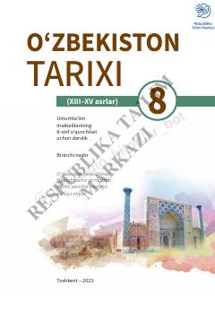

OTXIII–XV asrlar Oʻzbekiston tarixi boʻyicha 8-sinf uchun moʻljallangan rasmiy maktab darsligi.
Ushbu darslik 8-sinf oʻquvchilari uchun moʻljallangan boʻlib, XIII–XV asrlarda Movarounnahr va Xorazm hududlarida kechgan tarixiy jarayonlarni qamrab oladi. Kitobda Xorazmshohlar davlati, Chigʻatoy ulusi hamda Amir Temur va temuriylar davri, shuningdek, oʻsha davr ilm-fan va madaniyati haqida batafsil maʼlumotlar berilgan.